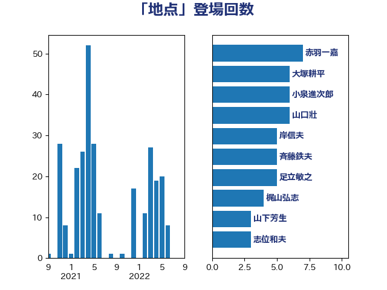

単語「地点」

| 赤羽一嘉 | 公明党 | 7 回 |
| 大塚耕平 | 国民民主党 | 6 回 |
| 小泉進次郎 | 自由民主党 | 6 回 |
| 山口壯 | 自由民主党 | 6 回 |
| 岸信夫 | 自由民主党 | 5 回 |
| 斉藤鉄夫 | 公明党 | 5 回 |
| 足立敏之 | 自由民主党 | 5 回 |
| 梶山弘志 | 自由民主党 | 4 回 |
| 山下芳生 | 日本共産党 | 3 回 |
| 志位和夫 | 日本共産党 | 3 回 |
| 江島潔 | 自由民主党 | 3 回 |
| 田中健 | 国民民主党 | 3 回 |
| 近藤昭一 | 立憲民主党 | 3 回 |
| 上杉謙太郎 | 自由民主党 | 2 回 |
| 吉田宣弘 | 公明党 | 2 回 |
| 嘉田由紀子 | 無所属 | 2 回 |
| 小田原潔 | 自由民主党 | 2 回 |
| 平木大作 | 公明党 | 2 回 |
| 河野太郎 | 自由民主党 | 2 回 |
| 浅野哲 | 国民民主党 | 2 回 |
| 漆間譲司 | 日本維新の会 | 2 回 |
| 片山大介 | 日本維新の会 | 2 回 |
| 逢坂誠二 | 立憲民主党 | 2 回 |
| 鈴木敦 | 国民民主党 | 2 回 |
| 中島克仁 | 立憲民主党 | 1 回 |
| 中川康洋 | 公明党 | 1 回 |
| 丸川珠代 | 自由民主党 | 1 回 |
| 井上哲士 | 日本共産党 | 1 回 |
| 伊波洋一 | 無所属 | 1 回 |
| 伊藤孝江 | 公明党 | 1 回 |
| 北神圭朗 | 無所属 | 1 回 |
| 和田義明 | 自由民主党 | 1 回 |
| 國重徹 | 公明党 | 1 回 |
| 城井崇 | 立憲民主党 | 1 回 |
| 堀井学 | 自由民主党 | 1 回 |
| 大口善徳 | 公明党 | 1 回 |
| 室井邦彦 | 日本維新の会 | 1 回 |
| 宮澤博行 | 自由民主党 | 1 回 |
| 小宮山泰子 | 立憲民主党 | 1 回 |
| 小野田紀美 | 自由民主党 | 1 回 |
| 尾身朝子 | 自由民主党 | 1 回 |
| 山崎誠 | 立憲民主党 | 1 回 |
| 岩田和親 | 自由民主党 | 1 回 |
| 後藤祐一 | 立憲民主党 | 1 回 |
| 朝日健太郎 | 自由民主党 | 1 回 |
| 末松信介 | 自由民主党 | 1 回 |
| 林芳正 | 自由民主党 | 1 回 |
| 柚木道義 | 立憲民主党 | 1 回 |
| 永岡桂子 | 自由民主党 | 1 回 |
| 渡辺猛之 | 自由民主党 | 1 回 |
| 玉木雄一郎 | 国民民主党 | 1 回 |
| 田島麻衣子 | 立憲民主党 | 1 回 |
| 田村智子 | 日本共産党 | 1 回 |
| 石垣のりこ | 立憲民主党 | 1 回 |
| 穀田恵二 | 日本共産党 | 1 回 |
| 緑川貴士 | 立憲民主党 | 1 回 |
| 茂木敏充 | 自由民主党 | 1 回 |
| 萩生田光一 | 自由民主党 | 1 回 |
| 藤田文武 | 日本維新の会 | 1 回 |
| 西村康稔 | 自由民主党 | 1 回 |
| 足立康史 | 日本維新の会 | 1 回 |
| 酒井庸行 | 自由民主党 | 1 回 |
| 里見隆治 | 公明党 | 1 回 |
| 金子恵美 | 立憲民主党 | 1 回 |
| 長妻昭 | 立憲民主党 | 1 回 |
| 阿部知子 | 立憲民主党 | 1 回 |
| 青木愛 | 立憲民主党 | 1 回 |
| 青柳仁士 | 日本維新の会 | 1 回 |
| 音喜多駿 | 日本維新の会 | 1 回 |
| 高橋光男 | 公明党 | 1 回 |
| 高橋千鶴子 | 日本共産党 | 1 回 |